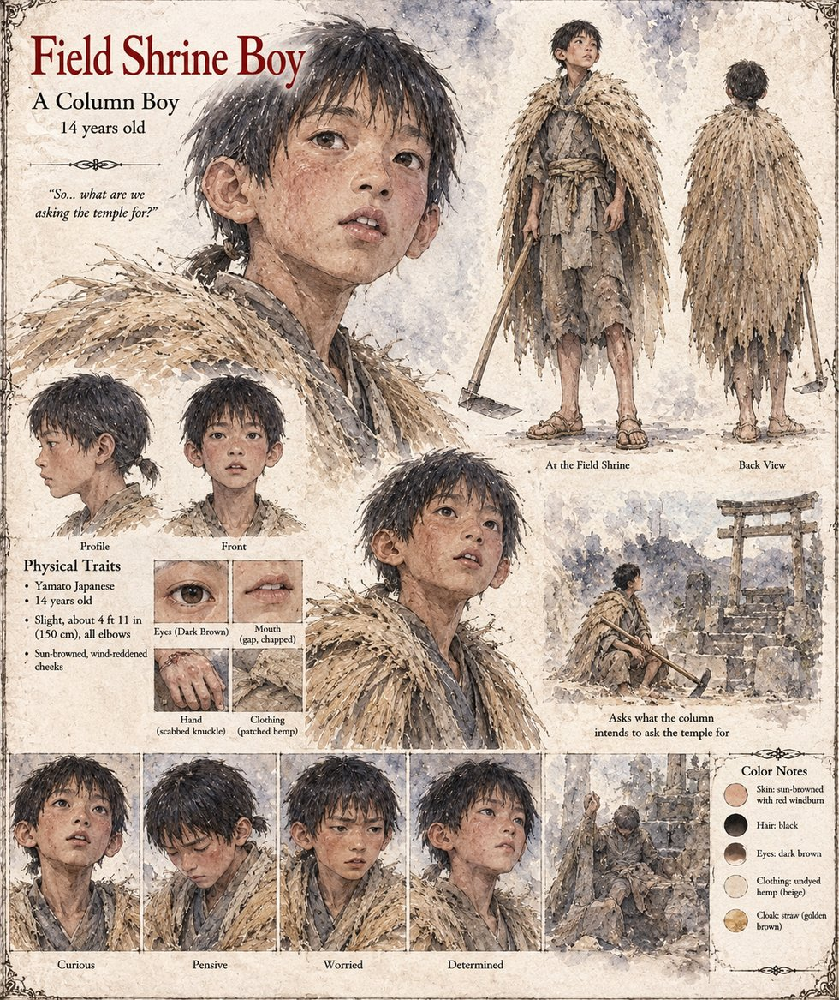

The Boy at the Field Shrine
A column boy · joined because his older brother had · asks what the column intends to ask the temple for · 14, by the manuscript
A boy of perhaps fourteen who joins the column because his older brother has. At the field shrine he asks what the column intends to ask the temple for (Part Three, What Three Hundred Became). The pack’s Prompt 8 sets it at night: the shrine’s two stone foxes have lost their ears to weather, the lowest step vanishes under a heap of some four hundred notched sticks, and Genzo walks the length of the pile with a lantern, counting aloud, while the boy beside him looks up. The pack’s own phrase for the request is a modest one that is not modest. The pile is the work of the man who laid the first notched stick.
His age is the manuscript’s and everything else is the pack’s, including the straw rain cape, which the pack says plainly is his brother’s. The sheet makes him slight, about 4 ft 11 in (150 cm) and all elbows, with a narrow face, wide ears, a chapped lip and a gap between his front teeth, cropped black hair with a cord-tied tuft at the nape, wide-set dark-brown eyes, sun-browned skin with wind-reddened cheeks, a scabbed knuckle on one hand, patched undyed hemp, and a short-handled hoe. Its expression panels are Curious, Pensive, Worried and Determined, and a fifth small scene on the bottom row carries no caption. Its larger scenes are At the Field Shrine, front and back, and one captioned Asks what the column intends to ask the temple for, with the boy crouched on the shrine steps beneath a torii, the hoe across his knees. The line printed under his name, “So… what are we asking the temple for?”, is the sheet’s own wording of the manuscript’s event.